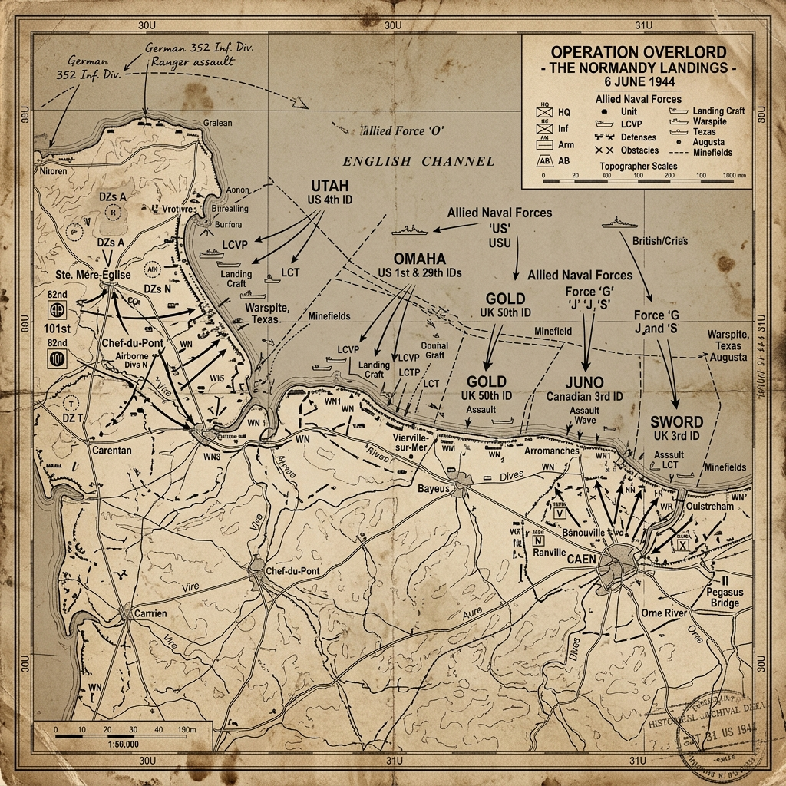

Strategic Context & The Second Front
For years, Soviet Premier Joseph Stalin had demanded that the Western Allies open a 'Second Front' in Western Europe to relieve the pressure on the Red Army, which was fighting the bulk of the German military on the Eastern Front. Planning for the invasion, codenamed Operation Overlord, began in 1943 under the direction of General Dwight D. Eisenhower, appointed Supreme Allied Commander.
The Germans, expecting an invasion, built the 'Atlantic Wall'—a network of concrete bunkers, coastal artillery batteries, beach obstacles, and minefields stretching from Norway to Spain. Field Marshal Erwin Rommel was appointed to inspect and improve the defenses in northern France. Rommel believed that the invasion had to be defeated on the beaches within the first 24 hours, while the Allies were still vulnerable.
The Intelligence War & Deception Campaigns
To ensure success, the Allies executed Operation Bodyguard—the most elaborate deception campaign in military history. The goal was to convince the German High Command that the invasion would land at the Pas de Calais, the shortest route across the English Channel, and that any landing in Normandy was a diversion.
The deception relied on double agents, fake radio traffic, and the creation of a fictitious army group, the First US Army Group (FUSAG), supposedly commanded by General George S. Patton. The Allies built fake military camps with inflatable tanks, dummy wooden landing craft, and false harbors in Kent, directly across from Calais. The deception succeeded, keeping German armored divisions positioned north of the Seine River for weeks after the actual landings.
Weapons, Technology, and Logistics
The invasion required new technological solutions. The Allies developed 'Hobart's Funnies'—specialized Sherman tanks modified for mine-clearing, bridging, and destroying concrete bunkers. They also built two massive artificial harbors, called 'Mulberry Harbors', which were towed across the Channel to allow the unloading of supplies without capturing a port.
The German defenders possessed MG 42 machine guns, which had a rate of fire of 1,200 rounds per minute, earning it the nickname 'Hitler's Buzzsaw'. Positioned in concrete bunkers overlooking the beaches, these weapons inflicted heavy casualties on the landing infantry.
Opening Moves: Airborne Operations
The invasion began shortly after midnight on June 6, 1944, with airborne operations. Over 24,000 American, British, and Canadian paratroopers were dropped behind enemy lines. The British 6th Airborne Division captured Pegasus Bridge near Caen to protect the eastern flank, while the US 82nd and 101st Airborne Divisions dropped on the western flank to secure exits from Utah Beach.
The drops were chaotic, with many units scattered miles from their targets due to cloud cover and anti-aircraft fire. However, this confusion worked to the Allies' advantage, disorienting the German command, preventing coordinated counterattacks, and allowing small groups of paratroopers to harass German units.
The Amphibious Assault: The Five Beaches
At 6:30 AM, Allied troops began storming five assault beaches. The Americans landed at Utah and Omaha beaches in the west, while the British and Canadians landed at Gold, Juno, and Sword beaches in the east. The landings were preceded by a massive naval bombardment and air strikes.
At Utah Beach, the US 4th Infantry Division landed in the wrong sector due to strong currents, but faced light resistance. Brigadier General Theodore Roosevelt Jr. made the famous decision: 'We’ll start the war from right here!' and directed the landing inland, securing the exits with minimal casualties.
The Tragedy at Omaha Beach
The situation at Omaha Beach was different. The preliminary bombing had missed the German defenses due to low visibility, and the heavy seas swamped many amphibious DD tanks before they reached the shore. The landing troops faced the veteran German 352nd Infantry Division, positioned on high bluffs overlooking the beach.
The American soldiers were pinned down by machine-gun and artillery fire, resulting in a slaughter on the sand. Through individual courage, localized leadership, and support from Allied destroyers that sailed into shallow water to fire on bunkers, the infantry managed to scale the cliffs and breach the defenses by early afternoon.
Pivot Points & Command Decisions
A key factor was the German command structure. The German reserve panzer divisions could only be released with the personal approval of Adolf Hitler. On the morning of June 6, Hitler was asleep at Berchtesgaden, and his staff refused to wake him. By the time he authorized the release of the tanks in the afternoon, the Allied air superiority prevented them from moving without facing destruction.
Furthermore, Erwin Rommel was in Germany celebrating his wife's birthday, believing that the stormy weather would prevent any invasion attempts. He rushed back to France but arrived too late to coordinate the beach defenses, which had already been breached.
The Soldier's Ordeal & Civilian Impact
For the assault troops, the landing was a terrifying experience. Many suffered from seasickness in the landing craft before being dropped into cold water under fire. The scenes of carnage on Omaha Beach, with wounded men drowning in the rising tide, left deep psychological scars on the survivors.
French civilians in Normandy suffered from Allied bombing and shelling, which targeted infrastructure and towns to prevent German reinforcements from reaching the beaches. Towns like Caen and Saint-Lô were reduced to ruins, and thousands of French civilians died, though they welcomed the Allied liberators.
The Aftermath & Strategic Consequences
By the end of June 6, the Allies had landed over 156,000 men and established a beachhead in Normandy, though they failed to capture key objectives like Caen. The successful invasion created a Second Front in Europe, forcing Germany to divide its forces between East and West.
Over the next two months, the Allies fought a grinding war of attrition in the Normandy bocage (hedgerows) before breaking out in Operation Cobra, which led to the liberation of Paris in August 1944 and the rapid retreat of German forces toward their own borders.
Historical Legacy & Long-term Impact
D-Day remains the largest amphibious invasion in history and a symbol of Allied coordination and military planning. The Normandy American Cemetery at Colleville-sur-Mer, overlooking Omaha Beach, serves as a poignant reminder of the high human cost of the invasion.
The battle demonstrated the importance of air supremacy, amphibious technology, and intelligence deception in modern warfare, and marked the start of the final phase of the war in Europe, leading to the collapse of the Third Reich.
Tactical Map & Theater of Operations
A detailed tactical beachhead map outlining the division sectors and airborne drop zones on D-Day:

Figure: Normandy Landings, June 6, 1944: Showing the five landing beaches (Utah, Omaha, Gold, Juno, Sword), naval bombardment units, and Allied airborne drop zones.
Archives, Primary Sources & Further Reading
To read reports, plans, and maps from the Normandy Campaign:
- The National WWII Museum - D-Day and Normandy A comprehensive portal detailing the planning, execution, and stories of the D-Day landings.
- The D-Day Story Portsmouth Museum An interactive digital exhibition featuring the Overlord Embroidery, landing craft, and personal diaries.
- US Army Center of Military History - D-Day Documents Official US Army historical monographs, operational maps, and unit action diaries.